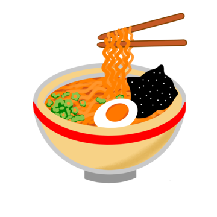

เกี่ยวกับเรา
รายละเอียดข้อมูลสินค้าหรือบริการจะปรากฏที่นี่
ก๋วยเตี๋ยว เป็นหนึ่งในอาหารประเภทเส้นของจีนที่ทำจากแป้งข้าวเจ้าโดยมากจะลวกให้สุกในน้ำเดือด สะเด็ดน้ำ แล้วนำมาใส่เครื่องปรุงชนิดต่าง ๆ นิยมรับประทานทั้งแบบน้ำและแบบแห้ง นิยมใช้ตะเกียบเป็นเครื่องมือช่วยรับประทาน
รายละเอียดระดับการบริการ
ราคา
50-70 บาท